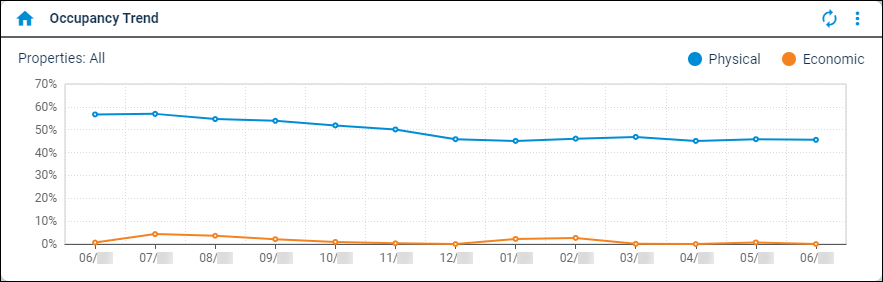

Source: https://rmxhelp.rentmanager.com/Topics/Express/Other/Dashboard-Tiles/Occupancy-Trend.htm
Occupancy Trend (Dashboard Tile)
The Occupancy Trend dashboard tile displays the percentage of units and home-type assets rented for each month compared to the potential occupancy. It also displays a percentage of economic occupancy for each month that represents the amount of rent paid prior to the end of the month, not including past due payments, compared to the market rent amount from each unit and home-type asset, as of the first of the month.
The information on this dashboard tile may be represented in a graph or a list.
Related Privileges
| Group | Privilege | Column |
|---|---|---|
| Setup | Edit own dashboards | Enabled |
For more information, refer to Control User Access.

Filter Information
Related Privileges
| Group | Privilege | Column |
|---|---|---|
| Setup | Edit dashboard data filters | Enabled |
For more information, refer to Control User Access.
To filter the information that displays in the dashboard tile, select  arrow_forward Settings to open the Occupancy Trend Data Filters pop-up. The available filter options are listed below.
arrow_forward Settings to open the Occupancy Trend Data Filters pop-up. The available filter options are listed below.
| Option | Description | |||||
|---|---|---|---|---|---|---|
|
Property Filter |
Each property whose physical and economic occupancy trends are included in the tile results. To include all current and future properties, select <All Properties>. Alternatively, select a property Group from the drop-down list. If <All Properties> is selected, you can also check Include inactive if 'All properties' selected to calculate averages for all current and future properties whether they are active or inactive. More Information This field populates only with the properties to which you have access. Your access to properties can be managed from your user account or on the property's details page. For more information, refer to Limit Access to a Property. |
|||||
|
Exclude Unit Status |
The unit status(es) that are not included in the tile's results. For example, you may want to exclude units with a Make Ready status as they cannot be physically occupied until the make-ready process is complete. To exclude all current and future unit statuses, check *** All. |
|||||
|
Period(s) |
The number of months in the past, excluding the current month, to include in the tile results. For example, if you enter 13, the physical and economic occupancy is calculated for the thirteen months prior to the current month. |
|||||
|
Calculate occupancy by |
The method used to determine whether a unit or home-type asset is considered physically occupied. Each option is described below. |
|||||
|
||||||
|
Graph Type |
The desired display option. |
|||||
|
||||||
|
Ignore dashboard property filter |
If checked, override the property filter configured on the Dashboard. |
Axis Descriptions
The information that displays on each axis in the graph is described below.
| Axis | Description |
|---|---|
|
X |
The month being examined in a MM/YY format. |
|
Y |
The percentage of physical and economic occupancy for the month. |
Column Descriptions
The information that displays on the tile is organized into the following columns.
| Column | Description |
|---|---|
|
Date |
The month being examined in a MM/YY format. |
|
Physical Occupancy |
The percentage of units and home-type assets occupied as of the specified month. This does not include units with a unit type marked as Other Rentable Item. |
|
Economic Occupancy |
The percent of total collected rent compared to the total market rent of occupied units and home-type assets. Total collected rent refers to the amount of rent paid prior to the end of the month, not including past due payments. Total market rent refers to the market rent amount from each unit and asset, as of the first of the month. |